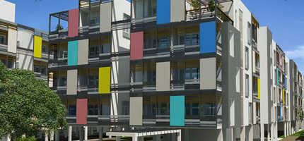

Places Around Me
S & P LIVING SPACES

S&P Living Spaces in Kil Ayanambakkam, Chennai is a popular society in the city, it is well made and has all the amenities you need.
There is ample True in this society, your vehicle will be fully protected and safe here. Have you seen the play area for children here? If you have kids, they will love it.
You won't have to only look for houses on the ground floor, there are lift that you can use to get you to any floor. Moving into a home with wifi connectivity is extremely convenient, that is exactly what this society offers you.
If you like doing some cardio, or just like to focus on weights, this society has a well equipped gym that you should check out. Being sustainable as a society is very important, we have started by having a rainwater harvesting in the society.